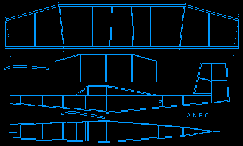
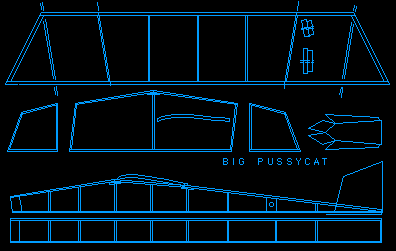
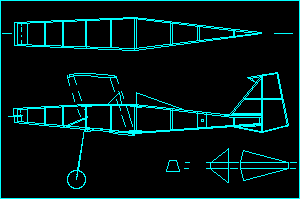
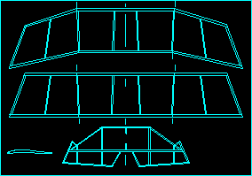

|
Dick Baxter has long been a proponent for designs that are simple to build, and fly exceptionally well. His offerings on this page are nearly foolproof, and have proven themselves repeatedly in a variety of sizes.
I built my Akro with an 8" span, and have been very happy with it. As the original Pussycat is currently being kitted by Lees Hobbies, the 16" span Big Pussycat is offered here. The Pussycat also makes a great 8 incher, though a word of warning. Smaller models can be more difficult to build and fly, due to being more delicate, and sensitive to trim changes. Basically though, you can't go wrong with these models. Download a plan, and resize it to your desires with your computer or a photocopy machine. If all this is too much trouble, ask for a Pussycat kit in your local shop, courtesy of Lee's Hobbies. In addition to these designs, he has also recreated the Wright Brothers 1903 biplane. While more challenging than the Akro, Pussycat or XE-5, it is still a relatively simple design, considering the subject. You can view it here.
Pussycats, Just a few of the many from the Marin Aero Club. The Akro reduced to 8" span, by Jason & Jeremy McGuire or Thayer Syme The XE-5 by Alex Munro or Jason McGuire. Read more about the Pussycat or the Akro. ---
| Akro
| Big Pussycat
| 
| 
| ---
| 
| 
| XE-5, Fuselage
| XE-5, Wings
| ---
|
| Akro, 27kb | Big Pussycat, 20kb | XE-5, 64kb (4 sheets) | Almost Wright 1903, 52kb
---
|
When printed, the wingspan of the Akro should be 15 1/8", 16" for the Big Pussycat and 16" for the XE-5. Of course you can scale them to any size you want, but the wood and wire dimensions on the plans are for these sizes.
|
Return to
| |||||
Copyright 1998-2003, Thayer Syme. All rights reserved